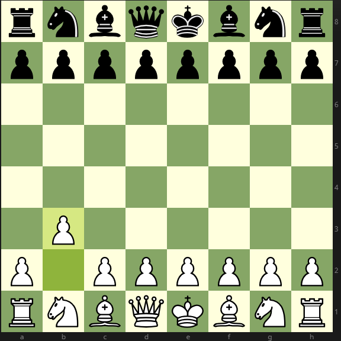

Дебют Ларсена
a
Дебют Ларсена(он же Нимцовича-Ларсена) многими назывался как "неправильный" дебют. Действительно, начинать с b3 - безумие, особенно на
Назад На главную
высоком уровне. Впрочем, дебют показал себя как очень неплохой вариант для блица, ибо черным еще надо опровергнуть игру белых, у белых же
вполне понятная игра. Входит в дебютный репертуар таких известных шахматистов как я)